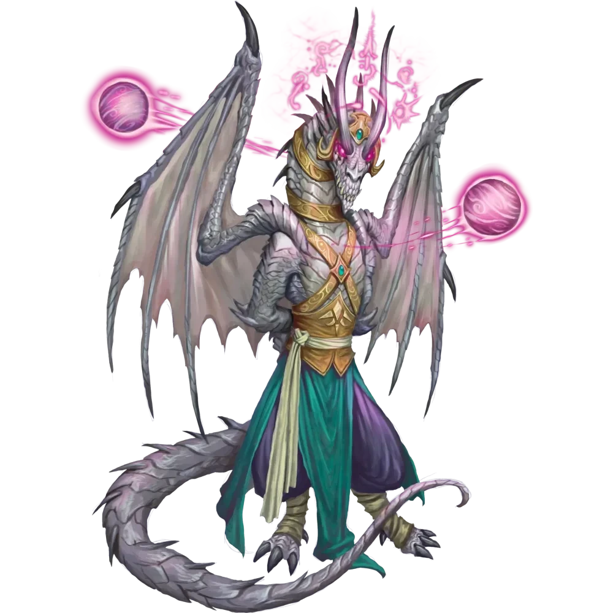

|
在众多类人种族的文化中，巨龙都是力量与强盛的象征。因此，再加上与生俱来的傲慢，巨龙往往很难承认事情出了差错。然而，有些巨龙体内奔涌着狂暴的魔法能量，这股能量一旦失控飙升，便会彻底改变它们的一生。有时，整支龙族血脉都会继承这种魔力，并在漫长的世代中延续下去。但对于这些所谓的“异类龙”而言，这股失控的能量究竟意味着什么？整个巨龙社会或许对它们不屑一顾，但它们强大的魔力却为其带来了无穷无尽的未开发潜能！ 你是一条厄运龙，脑海中无时无刻不被或真或假的骇人未来幻象所冲击。你是异类龙家族的一员。你的关联伤害类型为心灵，你的吐息武器为5尺宽、30尺长的线状，需要进行感知豁免。 巨龙特质属性值提升。你的力量或智力值提升2点。 年龄。任何年龄段的巨龙都可以举行永恒之光仪式，因此哪怕是一条刚完成仪式的初生永光龙，严格来说也可能已经活了数千岁。不过，仪式澎湃的魔法能量会洗去衰老的痕迹。从仪式中苏醒的初生永光龙洋溢着青春活力与无限潜能。尽管部分学者持不同看法，但只要不死于暴力或其他灾祸，永光龙的寿命与传统派巨龙同样漫长。 阵营。永光龙的龙族血统会强烈影响其信念，但影响程度远不如同血统的传统派巨龙。例如，银永光龙往往是善良的捍卫者，而黑永光龙则往往狡诈刻薄。然而，永光龙深知龙脉并非不可违逆的宿命。任何永光龙都可以完全抛弃先祖的旧习，去开拓属于自己的道路。 体型。除非一条永光龙将自身魔力专注于增大体型（许多永光龙都会这样做），否则它们的体型并不会比常见的类人种族更大。你的体型可在小型或中型之间自选。 速度。你的基础步行速度为30尺。 黑暗视觉。你同样具备传统派巨龙的敏锐感官。在距离你60尺范围内，你可以将微光光照视作明亮光照，将黑暗视作微光光照。你在黑暗中无法分辨颜色，只能看到灰度的影像。 龙之馈赠。你从巨龙职业所列的龙之馈赠中获得一项龙之馈赠。如果某项馈赠具有先决条件，你必须满足其先决条件才能获得它。 龙类。你的生物种类为龙类，而非类人生物。 天生武器。除常规的徒手打击外，你还获得两种天生武器攻击：啃咬攻击与爪击攻击。你的啃咬攻击造成1d6点穿刺伤害；你的爪击攻击造成1d4点挥砍伤害。 你必须至少有一只手空闲才能发动爪击攻击。 你在进行爪击攻击的攻击检定和伤害掷骰时可以使用敏捷代替力量，但啃咬攻击不适用。 语言。你能够说、读、写通用语和龙语。 存疑学识。你具有奥秘技能的熟练项。当你为回忆某个主题的知识而进行的智力（奥秘）检定失败时，由GM裁定，你可能会同时得知一点正确的信息和一点错误的信息，但你无从分辨孰真孰假。 永光厄运龙背景设定大多数厄运龙在整日遭受末日幻象的狂轰滥炸之后，难免变得阴郁消沉，这完全情有可原；但举行了永恒之光仪式的厄运龙却与传统派同族截然不同――他们通常能在未来中瞥见一丝希望，并积极寻找将那份美好期许化为现实的途径。遗憾的是，仪式并不能有效减少幻象袭来的频率，但部分永光厄运龙学会了减轻自身预言诅咒的法门……或是将其中一小部分转嫁到别人头上。 有时，厄运龙会在与幻象中的当事人结下深厚情谊之后举行仪式，投身到那些人的生活之中，趁时光尚在，陪伴他们一同欢庆人生与成就。尽管顶着“厄运”之名，这些巨龙却可以远非愁眉苦脸、郁郁寡欢之辈；只不过一旦最坏的结局终究降临，他们仍难免陷入阵阵消沉。 传统派厄运龙有时会觉得相信希望的永光厄运龙未免太过天真。少数传统派甚至会把纠缠某条永光厄运龙当成自己的私人使命，接二连三地抛出愈发骇人的凶险预言，企图碾碎对方的乐观信念。在此过程中，他们往往会把永光龙身边的朋友尽数吓跑，令永光龙陷入众叛亲离的孤立境地。通常到了这一步，永光龙便会奋起讨伐折磨自己的元凶，而双方往往会在一场充满宿命色彩的惨烈决战中同归于尽。不过，也有极少数备受迫害的永光厄运龙会用一则自己的占卜反将传统派厄运龙一军，逼得那条传统派巨龙仓皇离去，独自为自己悬而未决的命运愁肠百结。 加入冒险者队伍的永光厄运龙必须注意把那些模棱两可的预感藏在心里，因为绝大多数人都不喜欢没完没了地听闻一桩接一桩可能降临的灾难。然而，一条能够自如掌控自身预言能力的永光厄运龙，对于任何旅伴团体或冒险小队而言都是莫大的助力。 只需寥寥数语恰到好处的提点，永光厄运龙便能帮助新结交的挚友避开强盗伏击、识破凶手真身，或是找出地下城中的暗门。当然，那些懂得将自己特有的苦难精准倾泻到敌人头上的厄运龙同样大有用武之地。有时，永光厄运龙甚至会因某次特定的幻象而主动召集起一支属于自己的冒险小队，寻觅那些热切渴望在惨剧尚未发生之前便将其扼杀正轨的同道中人。 永光厄运龙偏爱能够强化或辅佐自身预言魔法的职业。许多永光厄运龙是受先祖或学识秘域赐力的天生先知，另一些则通过侍奉当初赋予自己这份天生异能的庇护主而成为女巫。那些为了理解自身而潜心求索的厄运龙可能会成为法师；还有些甚至将心神向内凝聚，觉醒为灵能者。无论处境如何，永光厄运龙都格外珍视把命运握在自己手中的力量。 勿迁怒信使厄运龙固然常带来凶讯，但除了极少数自我实现的预言（其中一桩曾一度对仙境的某处角落造成了显著影响）之外，他们只是在努力传达警示、协助减轻灾祸。遗憾的是，这并不能阻止旁人将灾祸归咎于他们。那些执意对迫在眉睫的灾难视而不见的人，往往会动用权势让敲响警钟者闭嘴，而这通常只会招致更加惨重的恶果。 延伸阅读：对应怪物图鉴：厄运龙 ・ 主书通用巨龙种族特质 ・ 巨龙职业 ・ 本卷新增龙之馈赠 |
 厄运龙（Doom Dragon） |